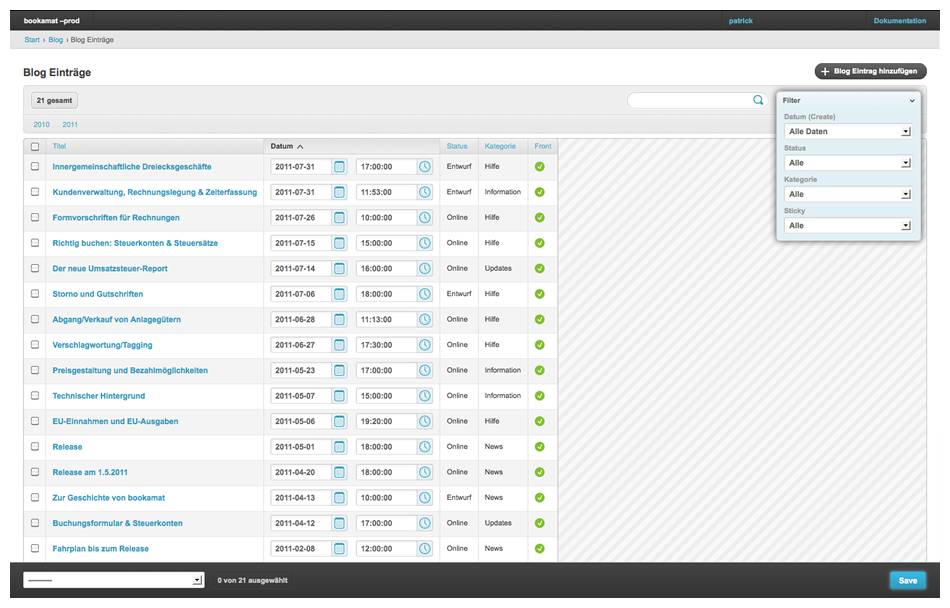

Changelist with activated filters, search, date-hierarchy, list-editables and actions.
Changeform with Tabular Inlines and inline sortables.
Changeform with Grappelli TinyMCE skin.
Customizable Dashboard.
Grappelli is developed and maintained by vonautomatisch